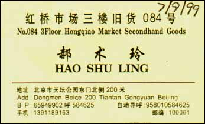

|
Written by Al Wong
(Write to me)
This is my experience in Beijing, China in the Summer of 1999. If you came to this webpage first, it's better if you start from the beginning of the story.
Actually, I'm a bit angry.
It seems a workman started to fix
my toilet. Then in the middle of it, this person leaves his tools
in the bathroom and leaves my room,
evidently going to lunch.
But he left my room door wide open!
How careless!
I have my laptop computer lying on the table
in plain sight along with several other souvenirs.
I know I locked my door before going to class.
While I pretty much trust the people in my group,
there are other people living on our floor.
I complained to the front desk about this and got an apology.
Today's activities include:
It is curious that the Chinese term Liu Lao Shi gave for
the Internet,
shang wan,
is different than the term given by
another teacher and by the person at the cyber cafe!
Hmmm...
We went to a hutong belonging to a grandmother. She was
very friendly and was very willing to explain how she
lived here.
A hutong house typically surrounds
central courtyard which gives each house more privacy and
some sunlight, weather permitting. This house was no exception.
Actually, it reminds me of my grandparents house
when I was a little kid.
You could see her hutong was part of a grander house in the
past. There were a few carved wooden panels and a few large
wooden posts which is evidence to this.
Then we visited a hutong preschool. After about 5 minutes,
I got sort of bored with this. Yep, it's a preschool and
there are cute little kids inside. OK, let's move on.

I caught a taxi cab but the driver said it's better if I
cross the street to take a cab as she was unwilling to
make a U turn. I could see why. Traffic was very heavy
at this time.
So I crossed the street, a 6-8 lane highway,
depending on how you count them, taking my life into my
own hands.
I caught another taxi cab on the other side of the street
and, during the trip, the driver started talking to me.
He was complaining about Chinese drivers and what they do.
And he pointed out several examples on the road.
Drivers cutting us off. Drivers moving at a slow crawl.
Drivers driving on the wrong side of the street!
It was
pretty funny. It turns out Hong Qiao is also close
to Tiananmen Square as we past it on our way.
The driver left me on the other side of the street to
Hong Qiao Market. This is a very busy intersection.
I think it's a 5-6 way intersection. Again, taking my life
into my own hands, I bravely crossed this street. OK, I really
had 3-4 bicycles play interference for me while I crossed.
Hong Qiao was great! Since I arrived at 4:30pm,
I thought I had 1.5 hours. Cathy told me this market
closes at 6pm.
In reality, the market closes
at 7pm! I went directly to the fourth floor and bought
several strands of pearls very inexpensively.
I also bought some more jade and a Chinese combination lock.
I also bought a fake Rolex for laughs.
After this, I still had time so I thought I'd check out the
lower floors. I didn't stay too long on the second floor
because I thought they were closing. I went to the first floor
and bargained for a fake Rolex. It was there I discovered
they close at 7pm! So I started walking around. I'm glad I
did because I found several stalls that had watch batteries
for sale and I needed a replacement.
The cab ride back to the language academy was an adventure
in itself! First, we got caught in heavy traffic.
The driver said he knew where I wanted to go
but got us lost. He had to ask for directions three separate
times! At last, he drove through this long and narrow dirt trail
with huge potholes and rocks. I thought he was going to
break something driving through this dirt trail!
It turns out this trail leads almost directly to
the language academy! I asked for a receipt and his
cab was able to automatically print one out!
The cab ride back took 45 minutes and cost me $31.00RMB!
As I was walking up the road, I saw our minibus ready
to leave and people were boarding! I ran up to my room
to leave my stuff and came back down because we were
going to the...
Then around 9pm, I getting impatient and checked out
the dance floor with Li Lao Shi.
The music was on but no one was dancing. So we started
dancing! Afterwards, everyone else came to dance.
I think most people had a good time. My bud, Andrew Chang,
did some break dancing with glow-in-the-dark sticks
and that drew a lot of attention from everyone.
He is a constant source of little surprises to me.
Andrew was getting other people to use his glow sticks
while they danced.
He got one of the dancing girls to use them.
She was dancing on top of a table in the DJ area
with the glow sticks. This was pretty funny.
While she was dancing with them,
I had an amusing idea. I asked (in Chinese) if Andrew could
dance with her! They wouldn't let the dancers
dance with the customers since they are working
but they would let Andrew dance on the table by himself.
Andrew went for it.
This was a key Kodak Moment in the trip and
I didn't have my camera!
I think Andrew missed an opportunity here too. He could
have made a fortune tonight selling glow sticks!
I'm giving long odds someone else will start to sell them
in the dance club within a week!
|